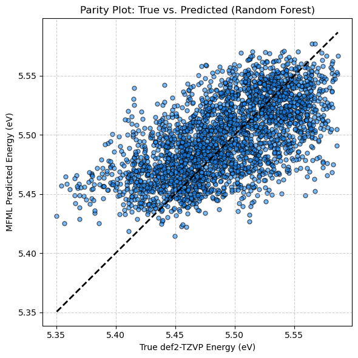

Duck Typing for MFML#
This example demonstrates the “duck typing” flexibility of the ModelMFML orchestrator. DUck typing is summarized well with ‘If it walks like a duck, swims like a duck, and wualks like a duck, it must be a duck.’ Here, we use it to mean that we can use any ML architecture that has certain attributes. While MFML-QC provides an ultra-fast, built-in Kernel Ridge Regressor (KRR), you are not forced into using it.
Because the ModelMFML class is flexible, you can pass any custom machine learning model (such as a Neural Network or Random Forest from scikit-learn) using the base_estimator argument, provided it has standard .fit(X, y) or .train(X,y), and .predict(X) methods!
[1]:
# sphinx_gallery_thumbnail_path = '../../data/media/ducktyping.png'
Imports and Helper Functions#
We reuse the exact same helper functions from the previous tutorial to extract and strictly nest our multi-fidelity training data.
[2]:
import os
import numpy as np
import matplotlib.pyplot as plt
from mfml_qc.datasets import load_benzene_data
from mfml_qc.mfml import ModelMFML
from mfml_qc.utils import build_hierarchy_arrays, top_down_subsetting
# Import a completely different algorithm from scikit-learn
from sklearn.ensemble import RandomForestRegressor
/home/vvinod/miniforge3/lib/python3.12/site-packages/tqdm/auto.py:21: TqdmWarning: IProgress not found. Please update jupyter and ipywidgets. See https://ipywidgets.readthedocs.io/en/stable/user_install.html
from .autonotebook import tqdm as notebook_tqdm
Loading and Splitting Data#
[3]:
dataset = load_benzene_data()
X_CM = dataset["X_CM"]
data = dataset["energies"]
hierarchy_cols = [2, 3, 6, 7]
num_fids = len(hierarchy_cols)
train_mask = data[:, 0] < 12288
test_mask = data[:, 0] >= 12288
X_train_parent = X_CM[train_mask]
X_test = X_CM[test_mask]
data_train = data[train_mask]
data_test = data[test_mask]
y_trains, indexes, means = build_hierarchy_arrays(data_train, hierarchy_cols)
# We use the same target sample sizes as the previous tutorial
n_trains_target = [1024, 512, 256, 128]
subset_y_trains, subset_indexes = top_down_subsetting(
y_trains, indexes, n_trains_target, seed=42
)
Passing a Custom Base Estimator#
Instead of initializing the default Kernel Ridge Regressor, we will initialize a Random Forest Regressor from scikit-learn. Before we get into the code, let’s briefly review the mechanics of a Random Forest Regressor. Unlike Kernel Ridge Regression, which relies on measuring continuous structural distances (kernels), a Random Forest is an ensemble method constructed from multiple decision trees.
For a given input geometry representation \(x\), each individual decision tree \(k\) in the forest makes an independent prediction \(h_k(x)\). The final ensemble prediction \(\hat{y}\) is simply the average of all \(K\) trees:
\begin{align}\hat{y}(x) = \frac{1}{K} \sum_{k=1}^{K} h_k(x)\end{align}
By training each tree on a random subset of the data (bootstrapping) and considering a random subset of features at each split, the Random Forest drastically reduces the variance and overfitting that is common in single decision trees.
Notice how we pass the initialized sk_model directly to the base_estimator argument of the ModelMFML orchestrator. The orchestrator will automatically duplicate this tree-based model for all 2N-1 required combinations!
[4]:
sk_model = RandomForestRegressor(
n_estimators=50, max_depth=10, random_state=42, n_jobs=-1
)
# the mfml model class takes the random forest regressor as the base-estimator
mfml_model = ModelMFML(base_estimator=sk_model, p_bar=False)
# The orchestrator handles calling `.fit()` on the Random Forest models natively
mfml_model.train(
X_train_parent=X_train_parent, y_trains=subset_y_trains, indexes=subset_indexes
)
Predicting and Evaluating#
[5]:
y_test_true = data_test[:, hierarchy_cols[-1]]
preds = mfml_model.predict(X_test=X_test, optimiser="default")
# Un-center the predictions
preds += means[-1]
mae = np.mean(np.abs(preds - y_test_true))
mae_kcal = mae * 23 # eV to kcal/mol
print(f"MFML (Random Forest) Test Set MAE: {mae:.6f} eV ({mae_kcal:.4f} kcal/mol)")
MFML (Random Forest) Test Set MAE: 0.029552 eV (0.6797 kcal/mol)
Parity Plot#
We can visualize the performance of our Random Forest-based MFML model. While kernels generally perform better for molecular representations like the Coulomb Matrix, this proves the framework is completely model-agnostic!
[6]:
plt.figure(figsize=(6, 6))
# Plot the scatter points
plt.scatter(y_test_true, preds, alpha=0.6, color="dodgerblue", edgecolor="k", s=25)
# Calculate the limits to draw a perfect 45-degree diagonal line
min_val = min(np.min(y_test_true), np.min(preds))
max_val = max(np.max(y_test_true), np.max(preds))
plt.plot([min_val, max_val], [min_val, max_val], "k--", lw=2)
plt.xlabel("True def2-TZVP Energy (eV)")
plt.ylabel("MFML Predicted Energy (eV)")
plt.title("Parity Plot: True vs. Predicted (Random Forest)")
plt.grid(True, linestyle="--", alpha=0.6)
plt.tight_layout()
plt.show()
